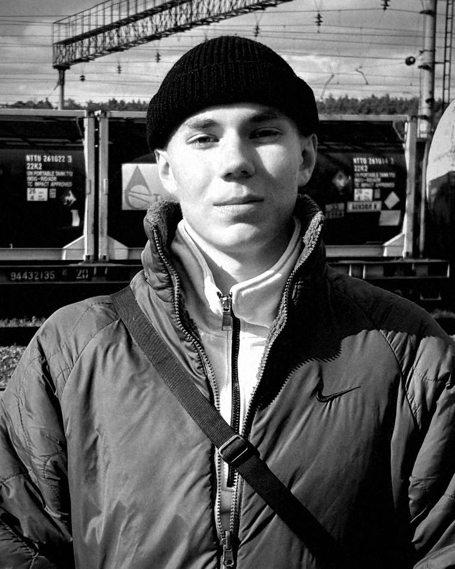
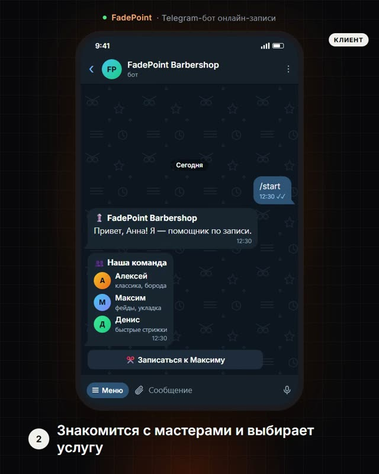
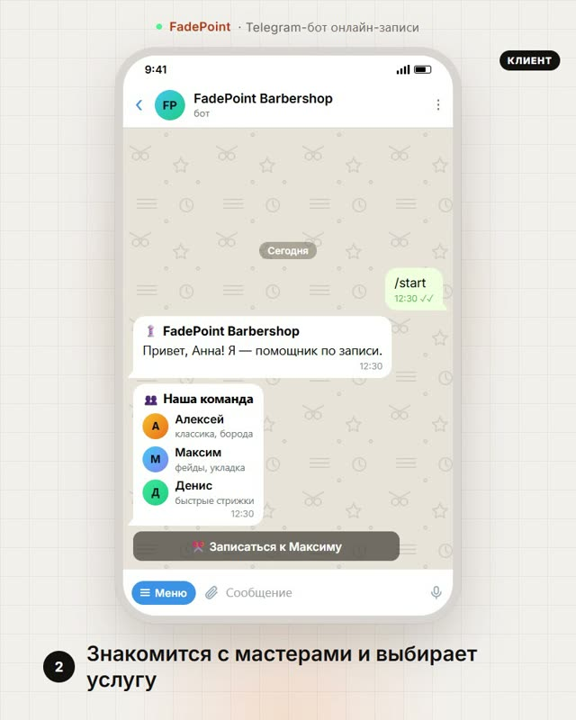
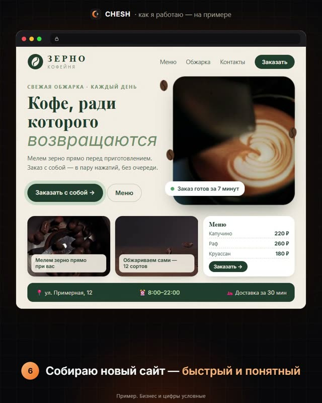
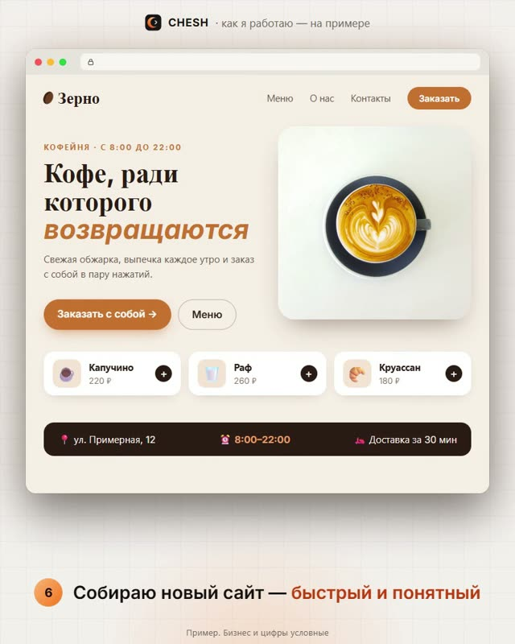

Тимофей Чешегоров
DevOps Engineer · Frontend Developer
Устранять причину проблемы, а не маскировать её
Чтобы заявок стало больше, задача решилась в кратчайшие сроки, а ваши посетители уходили в восторге
Никаких правок ради правок — только польза, которую видно
Не «ещё один редизайн», а решение проблемы
Часто сайту не нужен новый дизайн. Клиентов теряют из-за незаметных мелочей: запутанной навигации, медленной загрузки, формы, до которой никто не доходит. Я разбираю продукт, нахожу такие места и исправляю их — чтобы заявок и посетителей стало заметно больше.
Прохожу путь клиента от первого экрана до заявки — с телефона и с компьютера.
На выходе — короткий список проблем по важности: что исправить в первую очередь.
- быстро ли грузится страница;
- понятно ли за 5 секунд, что вы предлагаете и сколько это стоит;
- легко ли найти контакты и оставить заявку;
- не ломается ли вёрстка на телефоне.
Не перекрашиваю кнопки наугад, а устраняю то, что нашёл при проверке.
Каждое изменение объясняю простыми словами: что было, что стало и зачем.
- ускоряю загрузку и довожу мобильную версию;
- упрощаю навигацию и формы;
- переписываю непонятные тексты и заголовки;
- делаю заметными цену, контакты и кнопку заявки.
Снимаю с вас повторяющиеся задачи — вы тратите время на клиентов, а не на переписку.
Пример — мой бот FadePoint ↓- Telegram-бот записывает клиентов на свободное время;
- вы сразу получаете уведомление о каждой записи;
- заявки с сайта приходят в Telegram, а не теряются в почте;
- на частые вопросы бот отвечает сам.
Избранные работы
Нажмите на кейс — откроется подробный разбор: задача, что сделал и результат.


01 Telegram-ботFadePoint: запись без звонков и накладок
Клиент записывается к мастеру сам за минуту, владелец видит каждую запись. Смотреть кейс

02 Редизайн сайтаКофейня «Зерно»: от старого сайта к заказам
Старый сайт кофейни превращается в новый, с которого удобно заказать. Смотреть кейс 03
Карточки товаров
03
Карточки товаров
Карточки, мимо которых не пролистнуть
Четыре товара — четыре стиля. Фото «с ковра» → карточка, которая продаёт. Смотреть кейсРаботаю так, чтобы вам было спокойно
Стопроцентных гарантий не даёт никто — и я не буду обещать того, чего нет. Зато расскажу, почему мне важно вас не подвести, и что я обещаю каждому клиенту.
Репутация дороже любого заказа
Я только начинаю, и каждый проект — это отзыв, который увидят следующие клиенты. Мне важнее, чтобы вы остались довольны, вернулись и посоветовали меня знакомым.
Мне это по-настоящему интересно
Для меня каждый проект — способ разобраться в новом: в технологиях, в вашем бизнесе, в людях. Чем лучше получится ваш сайт или бот, тем больше вырасту я сам. Делать «лишь бы сдать» мне просто неинтересно.
Мои обещания
Каждому клиенту — без мелкого шрифта.
- Показываю работу на каждом шагеМакет, тестовая ссылка, первая версия бота — вы всегда знаете, что уже сделано и что дальше.
- Условия — письменно, до стартаЧто делаю, в какой срок и за сколько — фиксируем в переписке, чтобы потом не было вопросов.
- Оплата по этапамПлатите за каждый этап по ходу работы, а не всю сумму вперёд.
- Месяц бесплатных исправленийЕсли после сдачи всплыла моя ошибка — исправлю бесплатно.
- Всё остаётся у васПосле расчёта код, доступы и файлы полностью ваши, без привязки ко мне.
Обманом можно заработать один раз. Честной работой — всегда. Хочу делать проекты, за которые не стыдно, — и чтобы ко мне возвращались.
Здесь будут отзывы моих первых клиентов
Я только начинаю и не выдумываю отзывы. Станьте одним из первых: первые проекты делаю дешевле в обмен на честный отзыв — какой бы он ни был.
Отзывы оставляют только мои клиенты — по личной ссылке после сдачи проекта. Я ничего в них не правлю.
От заявки до запуска — без сюрпризов
Пять понятных шагов. На каждом вы видите результат и решаете, идём ли дальше, а в конце получаете всё на своё имя.
Заявка
Пишете в Telegram или оставляете заявку на сайте. Отвечаю и договариваемся о коротком созвоне или переписке.
в тот же деньРазбор и условия
Задаю пару вопросов, разбираюсь в задаче и предлагаю решение. Что, срок и цена — письменно, до старта.
1–2 дняМакет
Показываю, как всё будет выглядеть. Правим, пока вам не понравится, — только потом берусь за код.
этап 1 оплатыРазработка
Собираю по частям и даю тестовую ссылку: вы видите живой сайт или бота ещё до запуска.
этап 2 оплатыЗапуск и передача
Запускаем, передаю вам все доступы и инструкцию. Месяц бесплатно исправляю свои ошибки.
месяц поддержкиВ конце — всё ваше
Домен, код и бот оформлены на вас, пароли знаете только вы. Захотите — продолжим вместе, захотите — передадите другому разработчику. Вы ни от кого не зависите.
- Домен на ваше имя
- Код сайта и архив
- Telegram-бот
- Доступы с вашими паролями
- Инструкция «как поменять цены и фото»
- Акт приёма-передачи
Отвечаю заранее
Не нашли свой вопрос? Напишите — отвечу в тот же день.
Спросить в TelegramСколько это стоит?
Зависит от задачи. После короткого разговора называю цену письменно — до начала работы, и она не меняется по ходу. Первые проекты делаю дешевле в обмен на честный отзыв.
Сколько времени займёт?
Точный срок называю до старта и фиксирую в переписке. Карточки и презентации — обычно дни, лендинг или бот — недели. На каждом этапе вы видите, что уже готово.
Что нужно от меня?
Рассказать о бизнесе и о том, что хочется изменить. Тексты и фото — если есть; если нет, помогу подобрать. Дальше — смотреть результат на каждом шаге и говорить, что нравится, а что нет.
А если мне не понравится?
Сначала согласуем макет — до того, как я начну код. Правим, пока не понравится. Оплата по этапам: вы платите только за то, что уже увидели и приняли.
Кому будет принадлежать сайт или бот?
Вам. Домен, код и бот оформляются на вас, пароли знаете только вы. Отдаю инструкцию и подписываем акт приёма-передачи.
Смогу ли я потом что-то менять сам?
Да. Могу подключить простую панель для текстов, цен и фото — или вносить изменения сам по договорённости. Месяц после сдачи исправляю свои ошибки бесплатно.
Вы работаете удалённо?
Да, по всей России. Всё обсуждаем в Telegram, созваниваемся — по желанию.
Есть задача? Давайте обсудим
Расскажите, что есть сейчас и что хочется улучшить, — предложу решение и честно скажу, сколько это займёт.
Написать в Telegram- 01Вы оставляете заявку или пишете мне в Telegram
- 02Я задаю пару вопросов и разбираюсь в задаче
- 03Предлагаю решение, срок и цену — письменно, до старта работы
Заявка у меня!
Скоро напишу вам:
ваш бизнес больше не прячется 🥷Не получилось отправить
Ничего страшного: нажмите кнопку — откроется Telegram с уже готовым текстом заявки, останется нажать «Отправить».
Отправить через Telegram